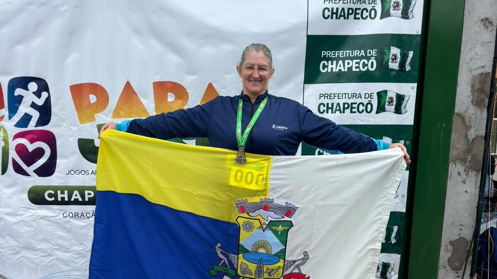
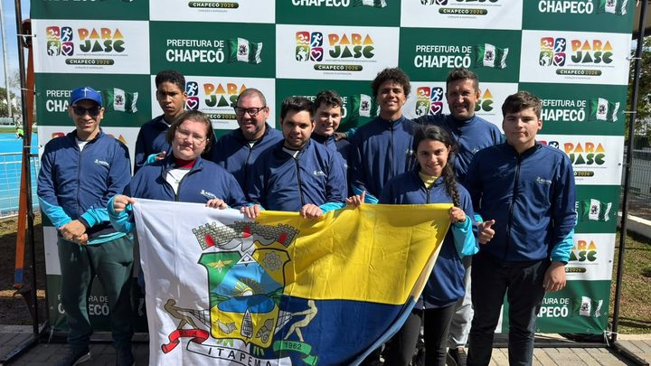
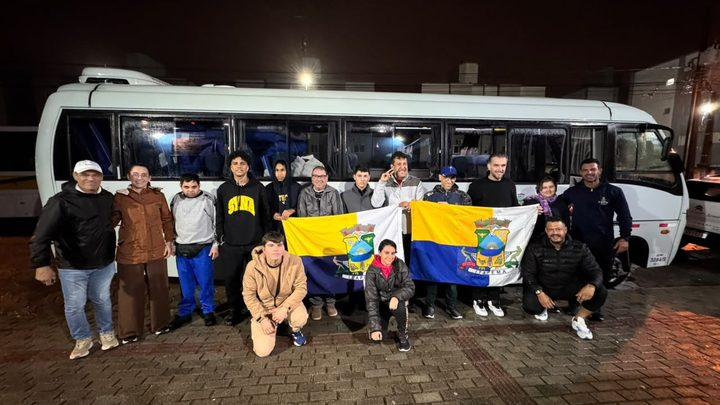

Itapema · Esporte
Itapema · EsporteItapema leva o ouro do paraciclismo no Parajasc com Kleverton Dala Corti, em Chapecó
O ouro do paraciclismo, no começo da mesma competição.
Arlete Vergutz ficou com a prata no arremesso de disco. Bryan Matheus e Marcos levaram bronze no arremesso de peso e no tênis de mesa. A competição é em Chapecó, no Oeste do estado.
Em 30 segundos · Modo de Leitura, formato original Santa Informa
Itapema conquistou mais três medalhas nos Jogos Abertos Paradesportivos de Santa Catarina, o Parajasc, na sexta-feira, 21 de agosto.
Foram uma prata e dois bronzes.
A prata é de Arlete Vergutz, no arremesso de disco da classe F57, no atletismo.
Bryan Matheus ficou com o bronze no arremesso de peso da classe F46, também no atletismo.
Marcos ficou com o bronze no tênis de mesa, classe 8 masculino.
A competição acontece em Chapecó, no Oeste catarinense. Itapema levou 33 atletas para esta edição.
Poder PúblicoPublicada em Redação Santa Informa

Itapema fechou a sexta-feira do Parajasc com mais três medalhas. Os Jogos Abertos Paradesportivos de Santa Catarina acontecem em Chapecó, no Oeste do estado, e o município somou uma prata e dois bronzes no dia 21 de agosto.
A prata veio no atletismo, com Arlete Vergutz, no arremesso de disco da classe F57. Os bronzes saíram de duas modalidades diferentes. Bryan Matheus ficou em terceiro no arremesso de peso da classe F46, também no atletismo. E Marcos ficou em terceiro no tênis de mesa, na classe 8 masculino.
O secretário de Esportes de Itapema, Paulinho Camargo, resumiu o dia assim: "Cada medalha representa muita dedicação dos nossos atletas e de toda a equipe." Segundo a administração, os resultados ampliam as conquistas do município na competição.
No atletismo paralímpico, a letra e o número ao lado da prova indicam a classe do atleta. O F marca as provas de campo, que são os arremessos e lançamentos. O número separa os grupos conforme o tipo e o grau de deficiência, para que a disputa aconteça entre condições parecidas. É por isso que o disco de Arlete aparece como F57 e o peso de Bryan Matheus como F46, mesmo sendo as duas provas do atletismo.
Não é a primeira medalha de Itapema nesta edição. O município estreou no Parajasc com ouro e levou 33 atletas em cinco modalidades, contra 3 atletas no ano anterior. Nesta semana, Kleverton Dala Corti já tinha trazido o ouro do paraciclismo, também em Chapecó.
Somando o que o portal acompanhou até aqui, a delegação vem crescendo em número e em resultado no mesmo ano, o que é o tipo de coisa que costuma levar mais tempo para acontecer.
O resumo de 30 segundos está no topo e a versão completa é o texto acima. Aqui ficam as três leituras da casa sobre o mesmo assunto.
Clara, a otimista
Três medalhas em um dia só, em duas modalidades diferentes, é resultado de gente que treina o ano inteiro sem plateia. Arlete, Bryan Matheus e Marcos voltam com pódio no currículo e com o nome da cidade na bandeira.
E olha o tamanho do salto: eram 3 atletas e agora são 33, no mesmo ano em que começam a aparecer os resultados. Quando estrutura chega, o talento que já estava aqui só precisa de lugar para competir.
Seu Prudêncio, o criterioso
Merece atenção o que vem depois da competição. Delegação que salta de 3 para 33 atletas em um ano cresce rápido, e crescimento rápido cobra continuidade: transporte, material adaptado, técnico e calendário de treino ao longo do ano, não só na semana dos jogos. Vale acompanhar se o orçamento do esporte acompanha o número novo.
Vale acompanhar também o registro dos resultados. A Prefeitura divulgou as medalhas, mas não as marcas de cada prova, e sem marca não dá para medir evolução do atleta nem justificar investimento com número na mão. Uma sugestão útil: publicar a marca junto do resultado, que é informação que a organização já tem.
Dito isso, o resultado fala por si. Prata no disco, bronze no peso e bronze na mesa, em duas modalidades diferentes e no mesmo dia, mostra que a base não depende de um atleta só. Isso é sinal de programa, não de sorte, e programa é exatamente o que dá para sustentar no ano que vem.
Caco, o sarcástico
Itapema mandou 33 atletas e continua trazendo medalha. A esta altura, o problema logístico da delegação vai ser o peso da bagagem na volta.
Prata no disco, bronze no peso e bronze na mesa. Três provas, três pódios, e ainda tem gente na cidade que acha que esporte adaptado é passatempo.
E o secretário falou em dedicação da equipe. Correto. A equipe se dedicou tanto que agora vai precisar de um armário novo.
Fontes: Prefeitura de Itapema, publicação de 21 de agosto de 2026 com os resultados de Itapema no Parajasc 2026, em Chapecó. Dados sobre a delegação e o ouro do paraciclismo em matéria de 18 de agosto e matéria de 19 de agosto do Santa Informa.
Itapema · EsporteO ouro do paraciclismo, no começo da mesma competição.

Itapema · EsporteComo o município saltou de 3 para 33 atletas em um ano.

Itapema · EsporteQuem foi para Chapecó e em quais modalidades.